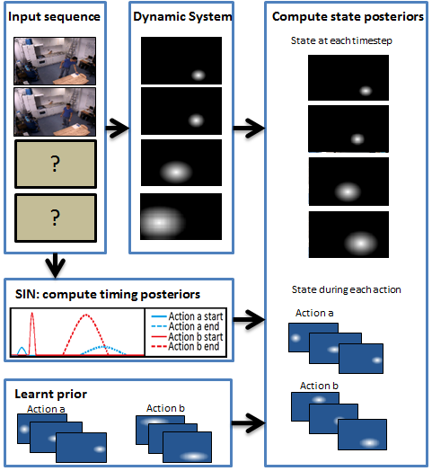
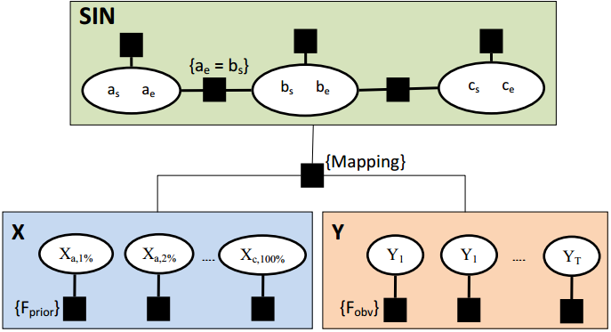

We address the problem of predicting
the physical state of a an agent performing a known activity. In
particular we are interested in predicting human movement during complex
composite activities. Our proposed framework combines a graphical model
that extends the Sequential Interval Network (SIN) [2] for modeling
global temporal structure of activities with a low level dynamic system
for modeling the dynamics of the physical state. Specifically, two sets
of new hidden state variables are added: one with respect to the
temporal structure and one with respect to time. A mapping factor is
defined to ensure these variables values remain consistent and hence
allows fusing the two sources of information. We then derive an
inference algorithm for computing the posterior densities of the hidden
variables. The system can run in an on-line predictive mode to recognize
on-going activity and make predictions arbitrarily far in the future
during execution of the activity. Experiments illustrate that the long
term prediction performance benefits from the knowledge about the
temporal structure of the activity while short term prediction
performance is improved by incorporating the dynamics of physical state.

The System Pipeline

The Architecture: a Graphical Model